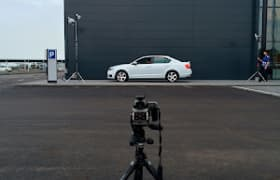

Прыгать или нет? Напишите в комментарии свой совет и смотрите прямую трансляцию в перископе, задавайте свои вопросы!
Фотографии
пользователей
Взгляните на фотографии, которые выкладывают пользователи!
Видите, как не хватает ваших?
 Вчера он на луну летал, сегодня в руки к нам попал.
Соседи будут рады!
Здесь могла быть ваша цитата о высоком и вечном.

Самая кубанская в мире!

Где снег-то?

Всем GM и взаимные лайки!